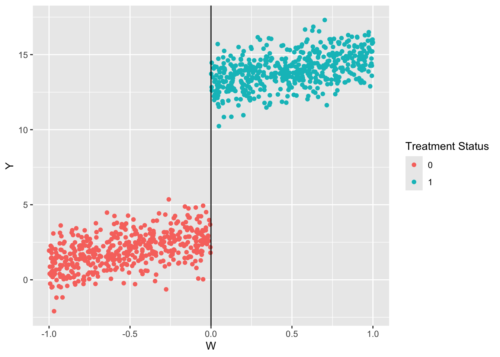
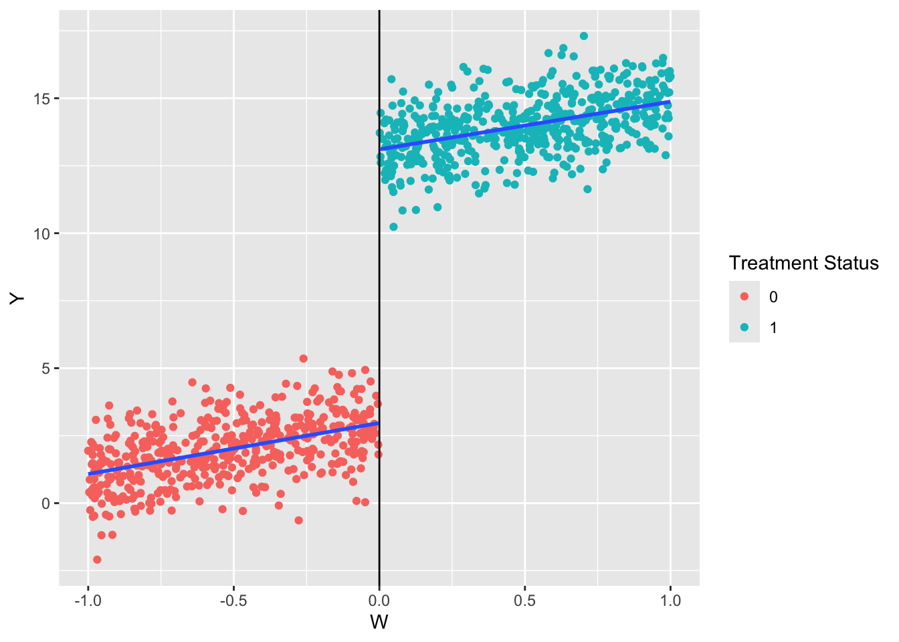
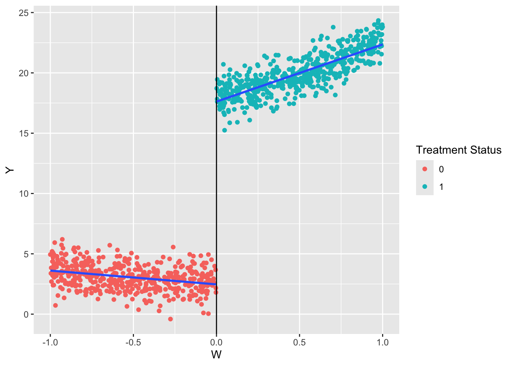

Randomized controlled trials are considered the “gold standard.” This means that when possible, a randomized controlled trial can produce plausible and useful causal estimates for the question at hand. However, randomization is not always possible, desirable, or ethical. There are some situations where there is “quasi-randomness.” This means that there is an argument that something about the intervention occurred as if it were random. Discontinuity designs are one example of a quasi-random design.
18.1 Defining a Discontinuity
Suppose treatment variable is \(D_i\). If \(D_i = 1\), then unit \(i\) is treated. If \(D_i = 0\), then unit \(i\) is in the control group. However, in this case, treatment was not randomly assigned. Instead, there is an underlying, continuous variable, \(W_i\), that determines \(D_i\):
\[\begin{equation}
D_i = \begin{cases} 1 & W_i \geq c \\ 0 W_i < c. \end{cases}
\end{equation}\]
Given some threshold \(c\), any value of \(W_i\) above the threshold implies treatment status and any value below implies control status. This setup allows us to use a regression discontinuity design.
The general idea is that units just below and just above the cutoff are similar, both in observed and unobserved ways. The average treatment effect for units for which \(W_i = c\) will provide a good approximation to the treatment effect.
This is sharp RDD because it is deterministic. As long as we know \(W_i\) we know with certainty what \(D_i\) will be.
The identifying assumption is that units cannot alter \(W_i\) with precision around the cut-off. For example, suppose \(W_i\) is a test score and the cutoff \(c\) determines if a student enters a gifted program. If students can study before the test, take the test multiple times, or appeal to slightly change their score, then the randomness is not as plausible. Students who partake in these “manipulations” may be unobservably different than students who do not.
18.2 Illustration with Simulated Data
Simulate and visualize the data. There is a cutoff at \(W = 0\).
library(dplyr)
Attaching package: 'dplyr'
The following objects are masked from 'package:stats':
filter, lag
The following objects are masked from 'package:base':
intersect, setdiff, setequal, union
library(ggplot2)# Set seedset.seed(470500)# Sample dataW <-runif(1000, -1, 1)Y <-3+2* W +10* (W >=0) +rnorm(1000)# Construct the datadf <-data.frame(Y = Y, W = W) %>%as_tibble()df <- df %>%mutate(D =ifelse(W >=0, 1, 0))# Plot the dataggplot(data = df) +geom_point(aes(x = W, y = Y, color =as.factor(D))) +geom_vline(xintercept =0) +labs(color ="Treatment Status")

The simplest way to estimate the regression is taking Equation Equation 18.1 at face value and estimating that. We are interested in the coefficient on \(D\). That is, given a value of \(W\), the effect of treatment is 10.137 units.
\[
Y = \alpha + \tau D + \epsilon
\]
rdd <-lm(formula = Y ~ D + W,data = df)summary(rdd)
Call:
lm(formula = Y ~ D + W, data = df)
Residuals:
Min 1Q Median 3Q Max
-3.2590 -0.6539 -0.0217 0.6412 2.9480
Coefficients:
Estimate Std. Error t value Pr(>|t|)
(Intercept) 2.93787 0.07114 41.30 <2e-16 ***
D 10.13690 0.12467 81.31 <2e-16 ***
W 1.82822 0.10773 16.97 <2e-16 ***
---
Signif. codes: 0 '***' 0.001 '**' 0.01 '*' 0.05 '.' 0.1 ' ' 1
Residual standard error: 0.9982 on 997 degrees of freedom
Multiple R-squared: 0.9732, Adjusted R-squared: 0.9731
F-statistic: 1.807e+04 on 2 and 997 DF, p-value: < 2.2e-16
This model linearly extrapolates across the threshold. It imposes that both the treatment and control group have the same slope (the coefficient on \(W\)). Notice that the lines below are parallel so we can believe it, but it is not always the case. In those settings, researchers use other models.
ggplot(data = df) +geom_point(aes(x = W, y = Y, color =as.factor(D))) +geom_vline(xintercept =0) +geom_smooth(aes(x = W, y = Y, group = D), method ="lm", se =FALSE) +labs(color ="Treatment Status")
`geom_smooth()` using formula = 'y ~ x'

Here is an example with more complex data.
# Set seedset.seed(470500)# Sample dataW <-runif(1000, -1, 1)Y <-3+2* W +15* (W >=0) +3* W^2+rnorm(1000)# Construct the datadf <-data.frame(Y = Y, W = W) %>%as_tibble()df <- df %>%mutate(D =ifelse(W >=0, 1, 0))# Plot the dataggplot(data = df) +geom_point(aes(x = W, y = Y, color =as.factor(D))) +geom_vline(xintercept =0) +geom_smooth(aes(x = W, y = Y, group = D), method ="lm", se =FALSE) +labs(color ="Treatment Status")
`geom_smooth()` using formula = 'y ~ x'

Here it is clear there are different slopes above and below the threshold. We can interact the running variable (\(W\)) with the treatment variable (\(D\)).
lm(formula = Y ~ D + W:D,data = df) %>%summary()
Call:
lm(formula = Y ~ D + W:D, data = df)
Residuals:
Min 1Q Median 3Q Max
-3.4561 -0.6953 -0.0607 0.6742 3.1522
Coefficients:
Estimate Std. Error t value Pr(>|t|)
(Intercept) 3.04936 0.04739 64.35 <2e-16 ***
D 14.57101 0.10195 142.92 <2e-16 ***
D:W 4.73620 0.15891 29.80 <2e-16 ***
---
Signif. codes: 0 '***' 0.001 '**' 0.01 '*' 0.05 '.' 0.1 ' ' 1
Residual standard error: 1.043 on 997 degrees of freedom
Multiple R-squared: 0.9852, Adjusted R-squared: 0.9852
F-statistic: 3.321e+04 on 2 and 997 DF, p-value: < 2.2e-16
Often, researchers add a quadratic term to relax the assumption that the fit is linear.
lm(formula = Y ~ D + W:D +I(W^2) +I(W^2):D,data = df) %>%summary()
Call:
lm(formula = Y ~ D + W:D + I(W^2) + I(W^2):D, data = df)
Residuals:
Min 1Q Median 3Q Max
-3.13868 -0.67245 -0.02409 0.63367 2.96582
Coefficients:
Estimate Std. Error t value Pr(>|t|)
(Intercept) 2.64185 0.06809 38.802 < 2e-16 ***
D 15.48166 0.14458 107.077 < 2e-16 ***
I(W^2) 1.17407 0.14629 8.025 2.84e-15 ***
D:W 1.65227 0.59487 2.778 0.00558 **
D:I(W^2) 1.94160 0.59915 3.241 0.00123 **
---
Signif. codes: 0 '***' 0.001 '**' 0.01 '*' 0.05 '.' 0.1 ' ' 1
Residual standard error: 0.9979 on 995 degrees of freedom
Multiple R-squared: 0.9865, Adjusted R-squared: 0.9864
F-statistic: 1.815e+04 on 4 and 995 DF, p-value: < 2.2e-16